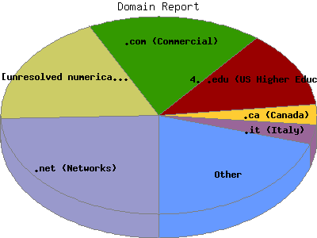

Report generated by Analog 5.91beta1 and Report Magic 2.21
|
Web Server Statistics for "Harish Narayanan (hnarayan) - October 2004" Report generated by Analog 5.91beta1 and Report Magic 2.21 |
The Domain Report identifies the top origins of visitors to this site. This is determined by the suffix of their domain name. Use this information carefully as this is based on where their domain name is registered and may not always be an accurate identifier of the actual geographic location of this visitor. For example, while most .com domain names are from the United States, there are a growing number of .com domain names that exist outside the United States.
This report shows all results. This report is sorted by number of requests.

| Domain Name | Number of requests | Number of bytes transferred | Percentage of the bytes | Percentage of the requests | |
|---|---|---|---|---|---|
| 1. | .net (Networks) | 1,378 | 36.111 MB | 23.17% | 24.43% |
| 2. | [unresolved numerical addresses] | 1,037 | 34.424 MB | 22.09% | 18.38% |
| 3. | .com (Commercial) | 1,010 | 27.527 MB | 17.66% | 17.91% |
| aol.com (America Online) | 104 | 2.330 MB | 1.50% | 1.84% | |
| 4. | .edu (US Higher Education) | 711 | 17.021 MB | 10.92% | 12.60% |
| umich.edu | 351 | 9.563 MB | 6.14% | 6.22% | |
| si.umich.edu | 104 | 3.817 MB | 2.45% | 1.84% | |
| engin.umich.edu | 205 | 2.211 MB | 1.42% | 3.63% | |
| ummu.umich.edu | 10 | 1.833 MB | 1.18% | 0.18% | |
| itd.umich.edu | 14 | 1.564 MB | 1.00% | 0.25% | |
| uiowa.edu | 29 | 2.472 MB | 1.59% | 0.51% | |
| 5. | .ca (Canada) | 184 | 4.456 MB | 2.86% | 3.26% |
| 6. | .it (Italy) | 179 | 8.343 MB | 5.35% | 3.17% |
| 7. | .org (Non Profit Making Organizations) | 139 | 3.977 MB | 2.55% | 2.46% |
| 8. | .de (Germany) | 107 | 1.771 MB | 1.14% | 1.90% |
| 9. | .jp (Japan) | 97 | 1.147 MB | 0.74% | 1.72% |
| 10. | .uk (United Kingdom) | 93 | 3.028 MB | 1.94% | 1.65% |
| 11. | .fr (France) | 93 | 2.318 MB | 1.49% | 1.65% |
| 12. | .nl (Netherlands) | 66 | 2.932 MB | 1.88% | 1.17% |
| 13. | .in (India) | 52 | 1.238 MB | 0.80% | 0.92% |
| 14. | .au (Australia) | 51 | 1.040 MB | 0.67% | 0.90% |
| 15. | .no (Norway) | 46 | 302.879 KB | 0.19% | 0.81% |
| 16. | .at (Austria) | 37 | 615.866 KB | 0.39% | 0.66% |
| 17. | .us (United States) | 36 | 759.485 KB | 0.48% | 0.64% |
| 18. | .pl (Poland) | 35 | 715.392 KB | 0.45% | 0.62% |
| 19. | .mx (Mexico) | 29 | 478.177 KB | 0.30% | 0.51% |
| 20. | .hu (Hungary) | 26 | 1.578 MB | 1.01% | 0.46% |
| 21. | .cl (Chile) | 25 | 179.837 KB | 0.11% | 0.44% |
| 22. | .il (Israel) | 23 | 951.024 KB | 0.60% | 0.41% |
| 23. | .ch (Switzerland) | 22 | 499.661 KB | 0.31% | 0.39% |
| 24. | .nz (New Zealand) | 21 | 1.041 MB | 0.67% | 0.37% |
| 25. | .gov (US Government) | 19 | 135.979 KB | 0.09% | 0.34% |
| 26. | .be (Belgium) | 13 | 99.915 KB | 0.06% | 0.23% |
| 27. | .th (Thailand) | 13 | 607.562 KB | 0.38% | 0.23% |
| 28. | .lt (Lithuania) | 13 | 91.463 KB | 0.06% | 0.23% |
| 29. | .se (Sweden) | 12 | 88.125 KB | 0.06% | 0.21% |
| 30. | .ro (Romania) | 10 | 62.860 KB | 0.04% | 0.18% |
| 31. | .sg (Singapore) | 10 | 181.373 KB | 0.11% | 0.18% |
| 32. | .pt (Portugal) | 8 | 42.420 KB | 0.03% | 0.14% |
| 33. | .fi (Finland) | 7 | 350.998 KB | 0.22% | 0.12% |
| 34. | .tr (Turkey) | 7 | 207.617 KB | 0.13% | 0.12% |
| 35. | .sk (Slovakia) | 7 | 34.638 KB | 0.02% | 0.12% |
| 36. | .br (Brazil) | 6 | 270.579 KB | 0.17% | 0.11% |
| 37. | .si (Slovenia) | 6 | 332.355 KB | 0.21% | 0.11% |
| 38. | .cz (Czech Republic) | 4 | 327.311 KB | 0.20% | 0.07% |
| 39. | .dk (Denmark) | 2 | 5.057 KB | 0.00% | 0.04% |
| 40. | .tg (Togo) | 2 | 9.048 KB | 0.01% | 0.04% |
| 41. | .ar (Argentina) | 2 | 711.710 KB | 0.45% | 0.04% |
| 42. | .ru (Russia) | 1 | 7.144 KB | 0.00% | 0.02% |
| 43. | .tw (Taiwan) | 1 | 2.522 KB | 0.00% | 0.02% |
| 44. | .kr (South Korea) | 1 | 4.596 KB | 0.00% | 0.02% |
This report was generated on November 16, 2004 14:01.
Report time frame October 1, 2004 00:09 to October 31, 2004 22:18.
| Web statistics report produced by: | |
 Analog 5.91beta1 Analog 5.91beta1 |  Report Magic 2.21 Report Magic 2.21 |